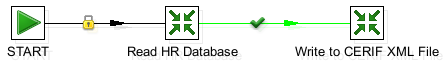

This section describes how to configure and/or run the job from the Spoon visual editor.
9.4.1. Running the job from Spoon

Figure 9.1. The worked example 5 job
Worked example 5 uses a Read HR Database transformation to extract data from the HR database and map it to a CERIF-based Common Data Model (CDM). The CDM data is then passed to a further transformation, Write to CERIF XML File, which serialises it to CERIF XML format and validates it against the CERIF schema. We consider each transformation below.